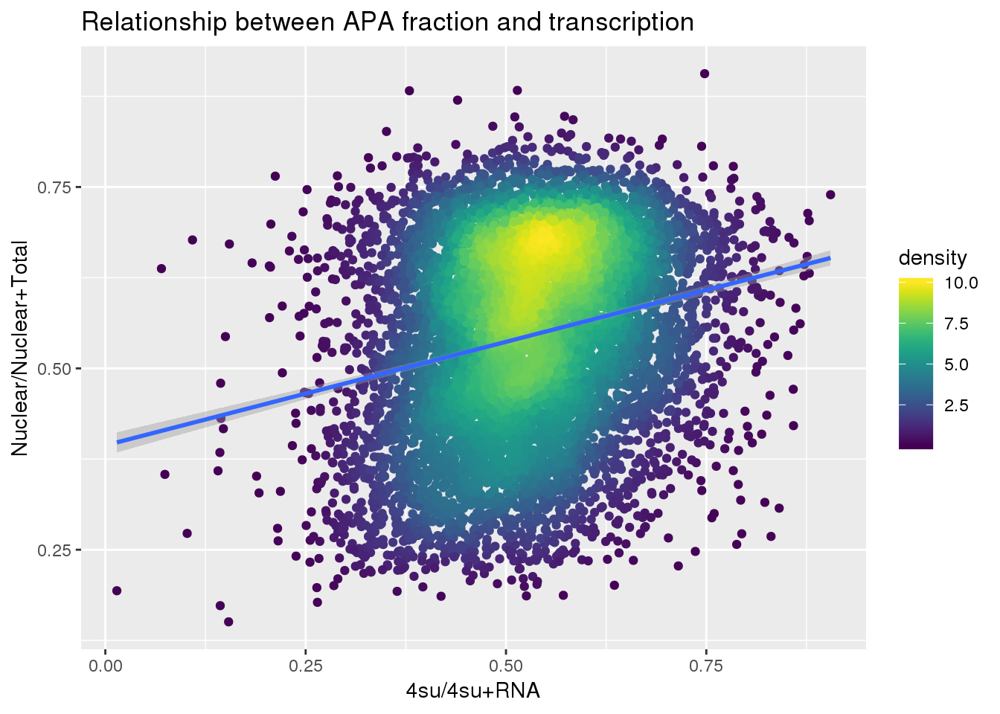
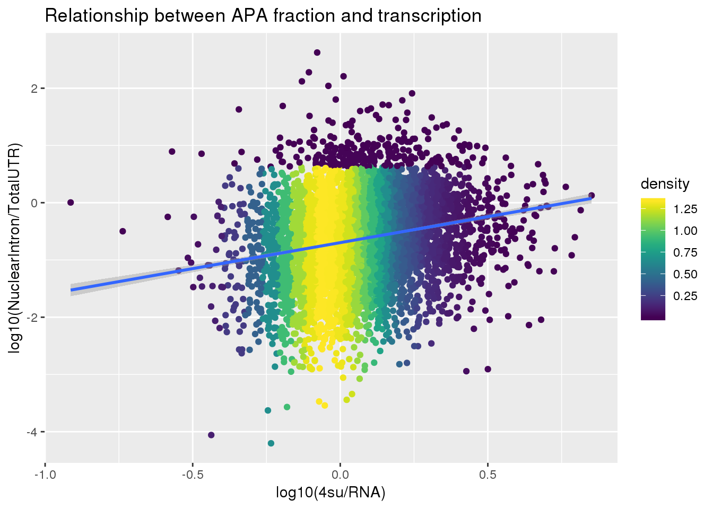
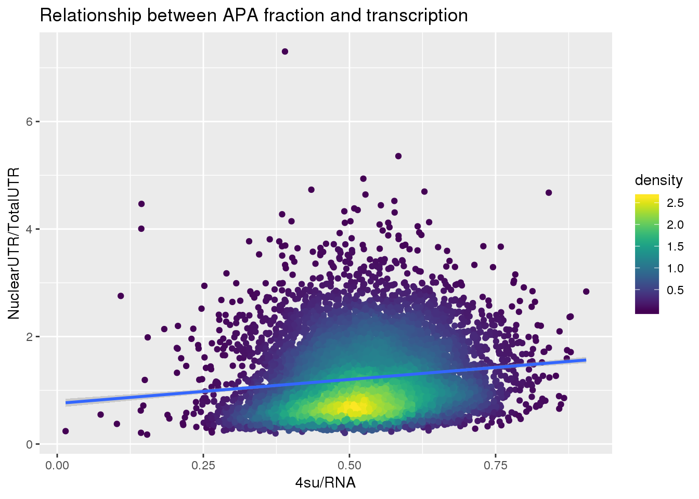
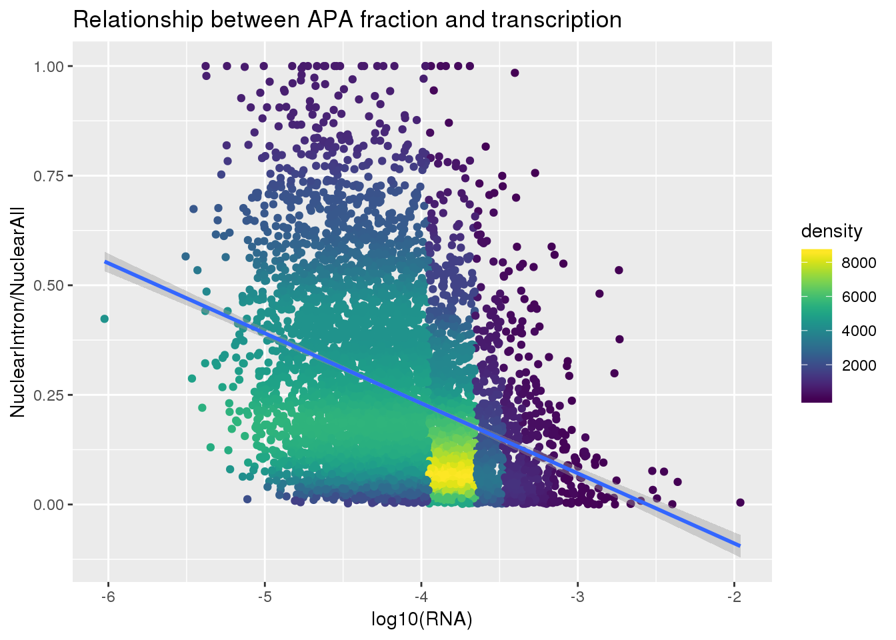
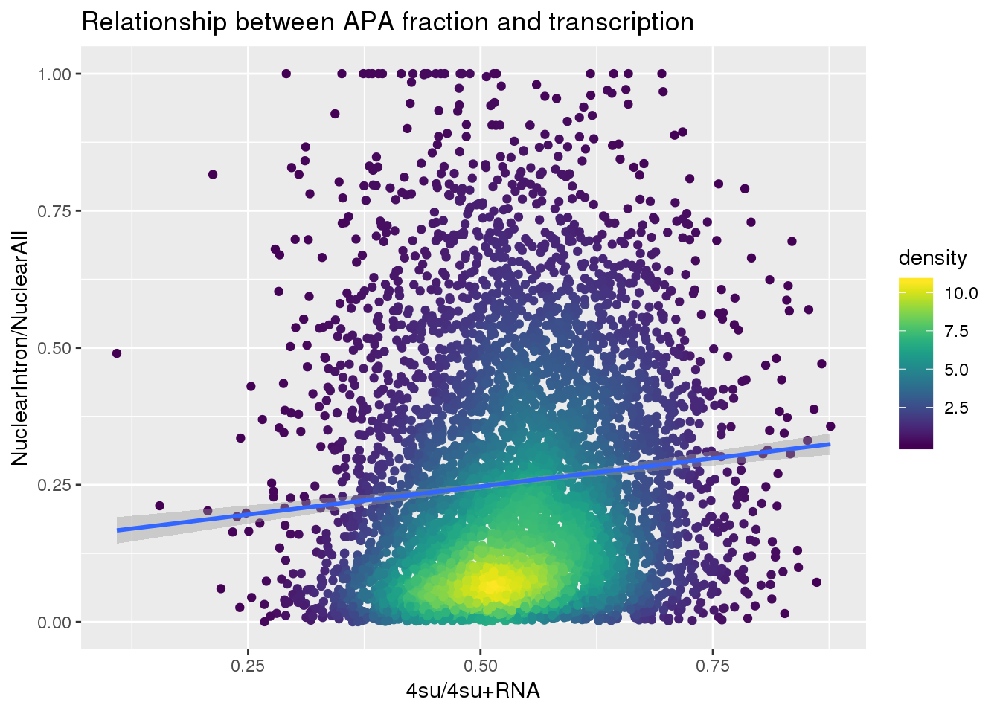
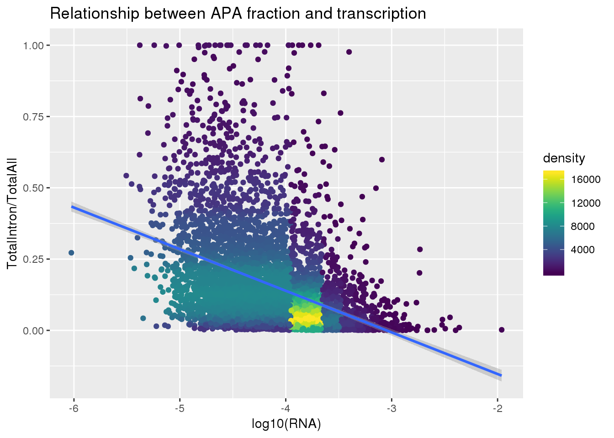
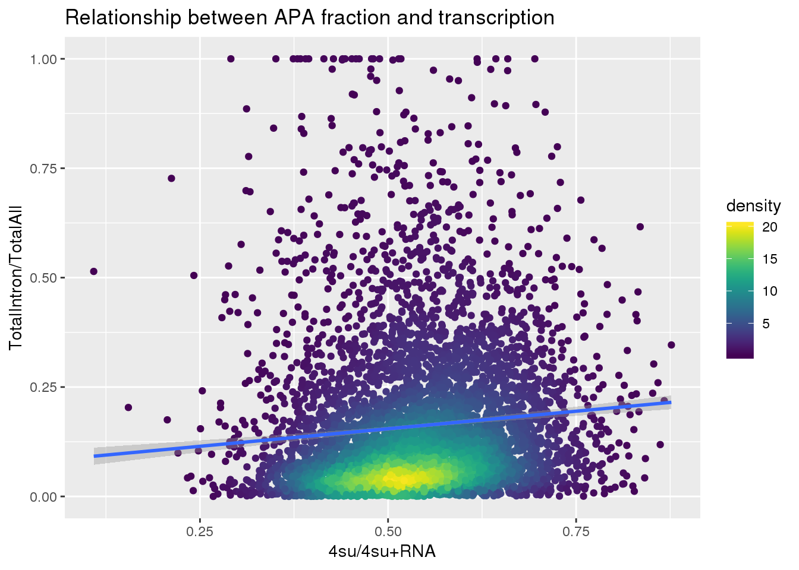

Nuclear fraction and nascent transcription
Briana Mittleman
5/15/2019
Last updated: 2019-05-17
Checks: 6 0
Knit directory: apaQTL/analysis/
This reproducible R Markdown analysis was created with workflowr (version 1.3.0). The Checks tab describes the reproducibility checks that were applied when the results were created. The Past versions tab lists the development history.
Great! Since the R Markdown file has been committed to the Git repository, you know the exact version of the code that produced these results.
Great job! The global environment was empty. Objects defined in the global environment can affect the analysis in your R Markdown file in unknown ways. For reproduciblity it’s best to always run the code in an empty environment.
The command set.seed(20190411) was run prior to running the code in the R Markdown file. Setting a seed ensures that any results that rely on randomness, e.g. subsampling or permutations, are reproducible.
Great job! Recording the operating system, R version, and package versions is critical for reproducibility.
Nice! There were no cached chunks for this analysis, so you can be confident that you successfully produced the results during this run.
Great! You are using Git for version control. Tracking code development and connecting the code version to the results is critical for reproducibility. The version displayed above was the version of the Git repository at the time these results were generated.
Note that you need to be careful to ensure that all relevant files for the analysis have been committed to Git prior to generating the results (you can use wflow_publish or wflow_git_commit). workflowr only checks the R Markdown file, but you know if there are other scripts or data files that it depends on. Below is the status of the Git repository when the results were generated:
Ignored files:
Ignored: .DS_Store
Ignored: .Rhistory
Ignored: .Rproj.user/
Ignored: output/.DS_Store
Untracked files:
Untracked: .Rprofile
Untracked: ._.DS_Store
Untracked: .gitignore
Untracked: _workflowr.yml
Untracked: analysis/._PASdescriptiveplots.Rmd
Untracked: analysis/._cuttoffPercUsage.Rmd
Untracked: analysis/cuttoffPercUsage.Rmd
Untracked: apaQTL.Rproj
Untracked: code/._FC_UTR.sh
Untracked: code/._FC_newPeaks_olddata.sh
Untracked: code/._LC_samplegroups.py
Untracked: code/._SnakefilePAS
Untracked: code/._SnakefilefiltPAS
Untracked: code/._aAPAqtl_nominal39ind.sh
Untracked: code/._apaQTLCorrectPvalMakeQQ.R
Untracked: code/._apaQTL_Nominal.sh
Untracked: code/._apaQTL_permuted.sh
Untracked: code/._bed2saf.py
Untracked: code/._bothFrac_FC.sh
Untracked: code/._callPeaksYL.py
Untracked: code/._chooseAnno2SAF.py
Untracked: code/._chooseSignalSite
Untracked: code/._chooseSignalSite.py
Untracked: code/._cluster.json
Untracked: code/._clusterPAS.json
Untracked: code/._clusterfiltPAS.json
Untracked: code/._config.yaml
Untracked: code/._config2.yaml
Untracked: code/._configOLD.yaml
Untracked: code/._convertNumeric.py
Untracked: code/._dag.pdf
Untracked: code/._extractGenotypes.py
Untracked: code/._fc2leafphen.py
Untracked: code/._filter5perc.R
Untracked: code/._filter5percPheno.py
Untracked: code/._filterpeaks.py
Untracked: code/._finalPASbed2SAF.py
Untracked: code/._fix4su304corr.py
Untracked: code/._fix4su604corr.py
Untracked: code/._fix4sukalisto.py
Untracked: code/._fixFChead.py
Untracked: code/._fixFChead_bothfrac.py
Untracked: code/._fixH3k12ac.py
Untracked: code/._fixRNAhead4corr.py
Untracked: code/._fixRNAkalisto.py
Untracked: code/._fixhead_netseqfc.py
Untracked: code/._make5percPeakbed.py
Untracked: code/._makeFileID.py
Untracked: code/._makePheno.py
Untracked: code/._makeSAFbothfrac5perc.py
Untracked: code/._makegencondeTSSfile.py
Untracked: code/._mergeAllBam.sh
Untracked: code/._mergeByFracBam.sh
Untracked: code/._mergePeaks.sh
Untracked: code/._namePeaks.py
Untracked: code/._netseqFC.sh
Untracked: code/._peak2PAS.py
Untracked: code/._peakFC.sh
Untracked: code/._pheno2countonly.R
Untracked: code/._quantassign2parsedpeak.py
Untracked: code/._removeloc_pheno.py
Untracked: code/._run_leafcutterDiffIso.sh
Untracked: code/._selectNominalPvalues.py
Untracked: code/._snakemakePAS.batch
Untracked: code/._snakemakefiltPAS.batch
Untracked: code/._submit-snakemakePAS.sh
Untracked: code/._submit-snakemakefiltPAS.sh
Untracked: code/._subset_diffisopheno.py
Untracked: code/._utrdms2saf.py
Untracked: code/.snakemake/
Untracked: code/APAqtl_nominal.err
Untracked: code/APAqtl_nominal.out
Untracked: code/APAqtl_nominal_39.err
Untracked: code/APAqtl_nominal_39.out
Untracked: code/APAqtl_permuted.err
Untracked: code/APAqtl_permuted.out
Untracked: code/BothFracDTPlotGeneRegions.err
Untracked: code/BothFracDTPlotGeneRegions.out
Untracked: code/DistPAS2Sig.py
Untracked: code/FC_UTR.err
Untracked: code/FC_UTR.out
Untracked: code/FC_UTR.sh
Untracked: code/FC_newPAS_olddata.err
Untracked: code/FC_newPAS_olddata.out
Untracked: code/FC_newPeaks_olddata.sh
Untracked: code/LC_samplegroups.py
Untracked: code/README.md
Untracked: code/Rplots.pdf
Untracked: code/Upstream100Bases_general.py
Untracked: code/aAPAqtl_nominal39ind.sh
Untracked: code/apaQTLCorrectPvalMakeQQ_4pc.R
Untracked: code/apaQTL_Nominal_4pc.sh
Untracked: code/apaQTL_permuted.4pc.sh
Untracked: code/bam2bw.err
Untracked: code/bam2bw.out
Untracked: code/bothFrac_FC.err
Untracked: code/bothFrac_FC.out
Untracked: code/bothFrac_FC.sh
Untracked: code/dag.pdf
Untracked: code/dagPAS.pdf
Untracked: code/dagfiltPAS.pdf
Untracked: code/extractGenotypes.py
Untracked: code/fc2leafphen.py
Untracked: code/finalPASbed2SAF.py
Untracked: code/findbuginpeaks.R
Untracked: code/fix4su304corr.py
Untracked: code/fix4su604corr.py
Untracked: code/fix4sukalisto.py
Untracked: code/fixFChead_bothfrac.py
Untracked: code/fixFChead_summary.py
Untracked: code/fixH3k12ac.py
Untracked: code/fixRNAhead4corr.py
Untracked: code/fixRNAkalisto.py
Untracked: code/fixhead_netseqfc.py
Untracked: code/get100upPAS.py
Untracked: code/getSeq100up.sh
Untracked: code/getseq100up.err
Untracked: code/getseq100up.out
Untracked: code/log/
Untracked: code/makeSAFbothfrac5perc.py
Untracked: code/makegencondeTSSfile.py
Untracked: code/netseqFC.err
Untracked: code/netseqFC.out
Untracked: code/netseqFC.sh
Untracked: code/removeloc_pheno.py
Untracked: code/run_DistPAS2Sig.err
Untracked: code/run_DistPAS2Sig.out
Untracked: code/run_distPAS2Sig.sh
Untracked: code/run_leafcutterDiffIso.sh
Untracked: code/run_leafcutter_ds.err
Untracked: code/run_leafcutter_ds.out
Untracked: code/selectNominalPvalues.py
Untracked: code/snakePASlog.out
Untracked: code/snakefiltPASlog.out
Untracked: code/subset_diffisopheno.py
Untracked: code/utrdms2saf.py
Untracked: data/CompareOldandNew/
Untracked: data/DTmatrix/
Untracked: data/DiffIso/
Untracked: data/PAS/
Untracked: data/QTLGenotypes/
Untracked: data/README.md
Untracked: data/RNAseq/
Untracked: data/Reads2UTR/
Untracked: data/SignalSiteFiles/
Untracked: data/ThirtyNineIndQtl_nominal/
Untracked: data/apaQTLNominal/
Untracked: data/apaQTLNominal_4pc/
Untracked: data/apaQTLPermuted/
Untracked: data/apaQTLPermuted_4pc/
Untracked: data/apaQTLs/
Untracked: data/assignedPeaks/
Untracked: data/bam/
Untracked: data/bam_clean/
Untracked: data/bam_waspfilt/
Untracked: data/bed_10up/
Untracked: data/bed_clean/
Untracked: data/bed_clean_sort/
Untracked: data/bed_waspfilter/
Untracked: data/bedsort_waspfilter/
Untracked: data/bothFrac_FC/
Untracked: data/exampleQTLs/
Untracked: data/fastq/
Untracked: data/filterPeaks/
Untracked: data/fourSU/
Untracked: data/h3k27ac/
Untracked: data/inclusivePeaks/
Untracked: data/inclusivePeaks_FC/
Untracked: data/mergedBG/
Untracked: data/mergedBW_byfrac/
Untracked: data/mergedBam/
Untracked: data/mergedbyFracBam/
Untracked: data/netseq/
Untracked: data/nuc_10up/
Untracked: data/nuc_10upclean/
Untracked: data/peakCoverage/
Untracked: data/peaks_5perc/
Untracked: data/phenotype/
Untracked: data/phenotype_5perc/
Untracked: data/sort/
Untracked: data/sort_clean/
Untracked: data/sort_waspfilter/
Untracked: nohup.out
Untracked: output/._.DS_Store
Untracked: output/._meanCorrelationPhenotypes.svg
Untracked: output/dtPlots/
Untracked: output/fastqc/
Untracked: output/meanCorrelationPhenotypes.svg
Unstaged changes:
Modified: analysis/PASusageQC.Rmd
Modified: analysis/choosePCs.Rmd
Modified: analysis/corrbetweenind.Rmd
Modified: analysis/nucintronicanalysis.Rmd
Deleted: code/Upstream10Bases_general.py
Modified: code/apaQTLCorrectPvalMakeQQ.R
Modified: code/apaQTL_permuted.sh
Modified: code/bed2saf.py
Modified: code/config.yaml
Deleted: code/test.txt
Note that any generated files, e.g. HTML, png, CSS, etc., are not included in this status report because it is ok for generated content to have uncommitted changes.
These are the previous versions of the R Markdown and HTML files. If you’ve configured a remote Git repository (see ?wflow_git_remote), click on the hyperlinks in the table below to view them.
| File | Version | Author | Date | Message |
|---|---|---|---|---|
| Rmd | 78b53a1 | brimittleman | 2019-05-17 | add full apa by loc |
| html | a295d27 | brimittleman | 2019-05-16 | Build site. |
| Rmd | 75f4567 | brimittleman | 2019-05-16 | add total intron/all |
| html | 460e1fb | brimittleman | 2019-05-16 | Build site. |
| Rmd | 1df3fe1 | brimittleman | 2019-05-16 | seperate fractions by locations |
| html | 81a3e16 | brimittleman | 2019-05-15 | Build site. |
| Rmd | f484dcd | brimittleman | 2019-05-15 | add nascent transcription plot |
library(reshape2)
library(workflowr)This is workflowr version 1.3.0
Run ?workflowr for help getting startedlibrary(tidyverse)── Attaching packages ──────────────────────────── tidyverse 1.2.1 ──✔ ggplot2 3.1.1 ✔ purrr 0.3.2
✔ tibble 2.1.1 ✔ dplyr 0.8.0.1
✔ tidyr 0.8.3 ✔ stringr 1.3.1
✔ readr 1.3.1 ✔ forcats 0.3.0 ── Conflicts ─────────────────────────────── tidyverse_conflicts() ──
✖ dplyr::filter() masks stats::filter()
✖ dplyr::lag() masks stats::lag()library(viridis)Loading required package: viridisLiteGene name switch file:
geneNames=read.table("../../genome_anotation_data/ensemble_to_genename.txt", sep="\t", col.names = c('gene_id', 'GeneName', 'source' ),stringsAsFactors = F)Create transcription phenotype
4su data
FourSU=read.table(file = "../data/fourSU//tr_decay_table_norm.txt", header=T, stringsAsFactors = F) %>% dplyr::select(gene_id,contains("4su_30"))
FourSU_geneNames=FourSU %>% inner_join(geneNames, by="gene_id") %>% dplyr::select(GeneName, contains("4su_30"))
FourgeneNames_long=melt(FourSU_geneNames,id.vars = "GeneName", value.name = "FourSU", variable.name = "FourSU_ind") %>% separate(FourSU_ind, into=c("type","time", "1400", "MAf", "Individual"), sep="_") %>% dplyr::select(GeneName, Individual, FourSU)
FourSU_geneMean=FourgeneNames_long %>% group_by(GeneName) %>%summarise(Mean_4su=mean(FourSU))rna seq
RNA=read.table(file = "../data/fourSU/tr_decay_table_norm.txt", header=T, stringsAsFactors = F) %>% dplyr::select(gene_id,contains("RNAseq_14000"))
RNA_geneNames=RNA %>% inner_join(geneNames, by="gene_id") %>% dplyr::select(GeneName, contains("RNA"))
RNAgeneNames_long=melt(RNA_geneNames,id.vars = "GeneName", value.name = "RNA", variable.name = "RNA_ind") %>% separate(RNA_ind, into=c("type", "1400", "MAf", "Individual"), sep="_") %>% dplyr::select(GeneName, Individual, RNA)
RNA_geneMean=RNAgeneNames_long %>% group_by(GeneName) %>%summarise(Mean_RNA=mean(RNA))Make transcription phenotype
Transcription=FourSU_geneMean %>% inner_join(RNA_geneMean, by="GeneName") %>% mutate(Transcription=Mean_4su/(Mean_4su + Mean_RNA)) %>% dplyr::select(GeneName, Transcription) %>% dplyr::rename("gene"=GeneName)
Transcription2=FourSU_geneMean %>% inner_join(RNA_geneMean, by="GeneName") %>% mutate(Transcription=Mean_4su/Mean_RNA) %>% dplyr::select(GeneName, Transcription) %>% dplyr::rename("gene"=GeneName)APA phenotype
5 perc apa
peaknumlist=read.table("../data/peaks_5perc/APApeak_Peaks_GeneLocAnno.5perc.bed", stringsAsFactors = F, header=F, col.names = c("chr", "start","end", "id", "score", "strand")) %>% separate(id, into=c("peaknum", "geneid"), sep=":") %>% mutate(peakid=paste("peak", peaknum,sep=""))Nuclear apa
NucAPA=read.table("../data/peakCoverage/APAPeaks.ALLChrom.Filtered.Named.GeneLocAnnoPARSED.Nuclear.Quant.Fixed.fc", stringsAsFactors = F, header = T) %>% dplyr::select(-Chr, -Start, -End, -Strand, -Length) %>% separate(Geneid, into=c("peakid","chrom", "start", "end", "strand", "geneID"),sep=":") %>% semi_join(peaknumlist, by="peakid") %>% separate(geneID, into=c("gene", "loc"), sep="_") %>% dplyr::select(-chrom , -start, -end, -strand, -loc)
NucApaMelt=melt(NucAPA, id.vars =c( "peakid", "gene"), value.name="count", variable.name="Ind") %>% separate(Ind, into=c('Individual', 'fraction') ,sep="_")%>% dplyr::select(peakid, gene, Individual, count)
NucAPA_bygene= NucApaMelt %>% group_by(gene,Individual) %>% summarise(NuclearSum=sum(count))total apa
TotAPA=read.table("../data/peakCoverage/APAPeaks.ALLChrom.Filtered.Named.GeneLocAnnoPARSED.Total.Quant.Fixed.fc", stringsAsFactors = F, header = T) %>% dplyr::select(-Chr, -Start, -End, -Strand, -Length) %>% separate(Geneid, into=c("peakid","chrom", "start", "end", "strand", "geneID"),sep=":") %>% semi_join(peaknumlist, by="peakid") %>% separate(geneID, into=c("gene", "loc"), sep="_") %>% dplyr::select(-chrom , -start, -end, -strand, -loc)
TotApaMelt=melt(TotAPA, id.vars =c( "peakid", "gene"), value.name="count", variable.name="Ind") %>% separate(Ind, into=c('Individual', 'fraction') ,sep="_")%>% dplyr::select(peakid, gene, Individual, count)
TotAPA_bygene= TotApaMelt %>% group_by(gene,Individual) %>% summarise(TotalSum=sum(count))Sum together:
ApaBothFrac=TotAPA_bygene %>% inner_join(NucAPA_bygene, by=c("gene", "Individual"))
ApaBothFrac_melt=melt(ApaBothFrac, id.vars=c("gene", "Individual"),value.name="APA_val" ) %>% mutate(fraction=ifelse(variable=="TotalSum", "total", "nuclear"), line=paste("NA", substring(Individual, 2), sep="")) %>% dplyr::select(gene, fraction, line, APA_val)Normalize with meta data info:
metadata=read.table("../data/MetaDataSequencing.txt", header = T,stringsAsFactors = F) %>% dplyr::select(line, fraction, Mapped_noMP)
metadata$line= as.character(metadata$line)
ApaBothFracStand=ApaBothFrac_melt %>% full_join(metadata, by=c("line", "fraction")) %>% mutate(StandApa=APA_val/Mapped_noMP)
ApaBothFracStand_geneMean=ApaBothFracStand %>% group_by(fraction, gene) %>% summarise(meanAPA=mean(StandApa, na.rm=T))
ApaBothFracStand_geneMean_spread= spread(ApaBothFracStand_geneMean,fraction,meanAPA ) %>% mutate(APAVal=nuclear/(total+ nuclear)) Join data and plot
Density function:
get_density <- function(x, y, ...) {
dens <- MASS::kde2d(x, y, ...)
ix <- findInterval(x, dens$x)
iy <- findInterval(y, dens$y)
ii <- cbind(ix, iy)
return(dens$z[ii])
}
set.seed(1)
dat <- data.frame(
x = c(
rnorm(1e4, mean = 0, sd = 0.1),
rnorm(1e3, mean = 0, sd = 0.1)
),
y = c(
rnorm(1e4, mean = 0, sd = 0.1),
rnorm(1e3, mean = 0.1, sd = 0.2)
)
)Joing apa and transcription
APAandTranscrption= Transcription %>% inner_join(ApaBothFracStand_geneMean_spread, by="gene")
APAandTranscrption$density <- get_density(APAandTranscrption$APAVal, APAandTranscrption$Transcription, n = 100)
summary(lm(data=APAandTranscrption, APAVal~Transcription))
Call:
lm(formula = APAVal ~ Transcription, data = APAandTranscrption)
Residuals:
Min 1Q Median 3Q Max
-0.37416 -0.09802 0.01235 0.10753 0.38048
Coefficients:
Estimate Std. Error t value Pr(>|t|)
(Intercept) 0.393873 0.007265 54.22 <2e-16 ***
Transcription 0.285418 0.013551 21.06 <2e-16 ***
---
Signif. codes: 0 '***' 0.001 '**' 0.01 '*' 0.05 '.' 0.1 ' ' 1
Residual standard error: 0.1338 on 7885 degrees of freedom
Multiple R-squared: 0.05326, Adjusted R-squared: 0.05314
F-statistic: 443.6 on 1 and 7885 DF, p-value: < 2.2e-16Plot:
ggplot(APAandTranscrption, aes(x=Transcription, y=APAVal))+ geom_point(aes(color=density)) + geom_smooth(method = "lm") + labs(x="4su/4su+RNA", y="Nuclear/Nuclear+Total", title="Relationship between APA fraction and transcription") + scale_color_viridis()
| Version | Author | Date |
|---|---|---|
| 81a3e16 | brimittleman | 2019-05-15 |
Split Nuclear by intronic
Nuclear intronic:
I will have to change the gene names for the 3’ info:
NucAPAIntron=read.table("../data/peakCoverage/APAPeaks.ALLChrom.Filtered.Named.GeneLocAnnoPARSED.Nuclear.Quant.Fixed.fc", stringsAsFactors = F, header = T) %>% dplyr::select(-Chr, -Start, -End, -Strand, -Length) %>% separate(Geneid, into=c("peakid","chrom", "start", "end", "strand", "geneID"),sep=":") %>% semi_join(peaknumlist, by="peakid") %>% separate(geneID, into=c("gene", "loc"), sep="_") %>% filter(loc=="intron")%>% dplyr::select(-chrom , -start, -end, -strand, -loc)
NucApaIntronMelt=melt(NucAPAIntron, id.vars =c( "peakid", "gene"), value.name="count", variable.name="Ind") %>% separate(Ind, into=c('Individual', 'fraction') ,sep="_")%>% dplyr::select(peakid, gene, Individual, count)
NucAPAIntron_bygene= NucApaIntronMelt %>% group_by(gene,Individual) %>% summarise(NuclearIntronSum=sum(count))Total UTR
TotUTRAPA=read.table("../data/peakCoverage/APAPeaks.ALLChrom.Filtered.Named.GeneLocAnnoPARSED.Total.Quant.Fixed.fc", stringsAsFactors = F, header = T) %>% dplyr::select(-Chr, -Start, -End, -Strand, -Length) %>% separate(Geneid, into=c("peakid","chrom", "start", "end", "strand", "geneID"),sep=":") %>% semi_join(peaknumlist, by="peakid") %>% separate(geneID, into=c("gene", "loc"), sep="_") %>%filter(loc=="utr3") %>% dplyr::select(-chrom , -start, -end, -strand, -loc)
TotApaUTRMelt=melt(TotUTRAPA, id.vars =c( "peakid", "gene"), value.name="count", variable.name="Ind") %>% separate(Ind, into=c('Individual', 'fraction') ,sep="_")%>% dplyr::select(peakid, gene, Individual, count)
TotAPAUTR_bygene= TotApaUTRMelt %>% group_by(gene,Individual) %>% summarise(TotalUTRSum=sum(count))ApaBothFracLoc=TotAPAUTR_bygene %>% inner_join(NucAPAIntron_bygene, by=c("gene", "Individual"))
ApaBothFracLoc_melt=melt(ApaBothFracLoc, id.vars=c("gene", "Individual"),value.name="APA_val" ) %>% mutate(fraction=ifelse(variable=="TotalUTRSum", "total", "nuclear"), line=paste("NA", substring(Individual, 2), sep="")) %>% dplyr::select(gene, fraction, line, APA_val)
ApaBothFracLocStand=ApaBothFracLoc_melt %>% full_join(metadata, by=c("line", "fraction")) %>% mutate(StandApa=APA_val/Mapped_noMP)
ApaBothFracLocStand_geneMean=ApaBothFracLocStand %>% group_by(fraction, gene) %>% summarise(meanAPA=mean(StandApa, na.rm=T))
ApaBothFracLocStand_geneMean_spread= spread(ApaBothFracLocStand_geneMean,fraction,meanAPA ) %>% mutate(APAValLoc=nuclear/(total+nuclear))
ApaBothFracLocStand_geneMean_spread2= spread(ApaBothFracLocStand_geneMean,fraction,meanAPA ) %>% mutate(APAValLoc=nuclear/total) Join this with the transcription info:
APAlocationandTranscrption= Transcription %>% inner_join(ApaBothFracLocStand_geneMean_spread, by="gene")
APAlocationandTranscrption$density <- get_density(APAlocationandTranscrption$APAValLoc, APAlocationandTranscrption$Transcription, n = 100)ggplot(APAlocationandTranscrption, aes(x=Transcription, y=APAValLoc))+ geom_point(aes(color=density)) + geom_smooth(method = "lm") + labs(x="4su/4su+RNA", y="NuclearIntron/TotalUTR + IntronNuclear", title="Relationship between APA fraction and transcription") + scale_color_viridis()
| Version | Author | Date |
|---|---|---|
| 460e1fb | brimittleman | 2019-05-16 |
summary(lm(data=APAlocationandTranscrption, APAValLoc~Transcription))
Call:
lm(formula = APAValLoc ~ Transcription, data = APAlocationandTranscrption)
Residuals:
Min 1Q Median 3Q Max
-0.40940 -0.19655 -0.07216 0.15348 0.80483
Coefficients:
Estimate Std. Error t value Pr(>|t|)
(Intercept) 0.02328 0.01768 1.317 0.188
Transcription 0.47752 0.03232 14.777 <2e-16 ***
---
Signif. codes: 0 '***' 0.001 '**' 0.01 '*' 0.05 '.' 0.1 ' ' 1
Residual standard error: 0.2455 on 5491 degrees of freedom
Multiple R-squared: 0.03825, Adjusted R-squared: 0.03807
F-statistic: 218.4 on 1 and 5491 DF, p-value: < 2.2e-16Just the ratio:
APAlocationandTranscrption2= Transcription2 %>% inner_join(ApaBothFracLocStand_geneMean_spread2, by="gene")
APAlocationandTranscrption2$density <- get_density(APAlocationandTranscrption2$APAValLoc, APAlocationandTranscrption2$Transcription, n = 100)
summary(lm(data=APAlocationandTranscrption2, log10(APAValLoc)~log10(Transcription)))
Call:
lm(formula = log10(APAValLoc) ~ log10(Transcription), data = APAlocationandTranscrption2)
Residuals:
Min 1Q Median 3Q Max
-3.2920 -0.4924 0.0373 0.5100 3.3917
Coefficients:
Estimate Std. Error t value Pr(>|t|)
(Intercept) -0.69768 0.01097 -63.59 <2e-16 ***
log10(Transcription) 0.90749 0.05474 16.58 <2e-16 ***
---
Signif. codes: 0 '***' 0.001 '**' 0.01 '*' 0.05 '.' 0.1 ' ' 1
Residual standard error: 0.7643 on 5491 degrees of freedom
Multiple R-squared: 0.04766, Adjusted R-squared: 0.04749
F-statistic: 274.8 on 1 and 5491 DF, p-value: < 2.2e-16ggplot(APAlocationandTranscrption2, aes(x=log10(Transcription), y=log10(APAValLoc)))+ geom_point(aes(color=density)) + geom_smooth(method = "lm") + labs(x="log10(4su/RNA)", y="log10(NuclearIntron/TotalUTR)", title="Relationship between APA fraction and transcription") + scale_color_viridis()
| Version | Author | Date |
|---|---|---|
| 460e1fb | brimittleman | 2019-05-16 |
Compare nuclear and total UTR
NucAPAUTR=read.table("../data/peakCoverage/APAPeaks.ALLChrom.Filtered.Named.GeneLocAnnoPARSED.Nuclear.Quant.Fixed.fc", stringsAsFactors = F, header = T) %>% dplyr::select(-Chr, -Start, -End, -Strand, -Length) %>% separate(Geneid, into=c("peakid","chrom", "start", "end", "strand", "geneID"),sep=":") %>% semi_join(peaknumlist, by="peakid") %>% separate(geneID, into=c("gene", "loc"), sep="_") %>% filter(loc=="utr3")%>% dplyr::select(-chrom , -start, -end, -strand, -loc)
NucAPAUTRMelt=melt(NucAPAUTR, id.vars =c( "peakid", "gene"), value.name="count", variable.name="Ind") %>% separate(Ind, into=c('Individual', 'fraction') ,sep="_")%>% dplyr::select(peakid, gene, Individual, count)
NucAPAUTR_bygene= NucAPAUTRMelt %>% group_by(gene,Individual) %>% summarise(NuclearUTRSum=sum(count))ApaBothFracUTR=TotAPAUTR_bygene %>% inner_join(NucAPAUTR_bygene, by=c("gene", "Individual"))
ApaBothFracUTR_melt=melt(ApaBothFracUTR, id.vars=c("gene", "Individual"),value.name="APA_val" ) %>% mutate(fraction=ifelse(variable=="TotalUTRSum", "total", "nuclear"), line=paste("NA", substring(Individual, 2), sep="")) %>% dplyr::select(gene, fraction, line, APA_val)
ApaBothFracUTRStand=ApaBothFracUTR_melt %>% full_join(metadata, by=c("line", "fraction")) %>% mutate(StandApa=APA_val/Mapped_noMP)
ApaBothFracUTRStand_geneMean=ApaBothFracUTRStand %>% group_by(fraction, gene) %>% summarise(meanAPA=mean(StandApa, na.rm=T))
ApaBothFracUTRStand_geneMean_spread= spread(ApaBothFracUTRStand_geneMean,fraction,meanAPA ) %>% mutate(APAValLoc=nuclear/total)
ApaBothFracUTRStand_geneMean_spread2= spread(ApaBothFracUTRStand_geneMean,fraction,meanAPA ) %>% mutate(APAValLoc=nuclear/(total+nuclear))THis is nuclear vs total only looking at teh UTR:
APAUTRandTranscrption= Transcription %>% inner_join(ApaBothFracUTRStand_geneMean_spread, by="gene")
APAUTRandTranscrption$density <- get_density(APAUTRandTranscrption$APAValLoc, APAUTRandTranscrption$Transcription, n = 100)
summary(lm(data=APAUTRandTranscrption, log10(APAValLoc)~log10(Transcription)))
Call:
lm(formula = log10(APAValLoc) ~ log10(Transcription), data = APAUTRandTranscrption)
Residuals:
Min 1Q Median 3Q Max
-0.69221 -0.18902 -0.00244 0.19660 0.90638
Coefficients:
Estimate Std. Error t value Pr(>|t|)
(Intercept) 0.155656 0.008892 17.50 <2e-16 ***
log10(Transcription) 0.485080 0.028924 16.77 <2e-16 ***
---
Signif. codes: 0 '***' 0.001 '**' 0.01 '*' 0.05 '.' 0.1 ' ' 1
Residual standard error: 0.252 on 7753 degrees of freedom
Multiple R-squared: 0.03501, Adjusted R-squared: 0.03488
F-statistic: 281.3 on 1 and 7753 DF, p-value: < 2.2e-16ggplot(APAUTRandTranscrption, aes(x=Transcription, y=APAValLoc))+ geom_point(aes(color=density)) + geom_smooth(method = "lm") + labs(x="4su/RNA", y="NuclearUTR/TotalUTR", title="Relationship between APA fraction and transcription") + scale_color_viridis()
| Version | Author | Date |
|---|---|---|
| 460e1fb | brimittleman | 2019-05-16 |
APAUTRandTranscrption2= Transcription %>% inner_join(ApaBothFracUTRStand_geneMean_spread2, by="gene")
APAUTRandTranscrption2$density <- get_density(APAUTRandTranscrption2$APAValLoc, APAUTRandTranscrption2$Transcription, n = 100)
summary(lm(data=APAUTRandTranscrption2, log10(APAValLoc)~log10(Transcription)))
Call:
lm(formula = log10(APAValLoc) ~ log10(Transcription), data = APAUTRandTranscrption2)
Residuals:
Min 1Q Median 3Q Max
-0.45055 -0.08567 0.01585 0.10118 0.37283
Coefficients:
Estimate Std. Error t value Pr(>|t|)
(Intercept) -0.23370 0.00447 -52.29 <2e-16 ***
log10(Transcription) 0.26974 0.01454 18.55 <2e-16 ***
---
Signif. codes: 0 '***' 0.001 '**' 0.01 '*' 0.05 '.' 0.1 ' ' 1
Residual standard error: 0.1267 on 7753 degrees of freedom
Multiple R-squared: 0.04251, Adjusted R-squared: 0.04239
F-statistic: 344.2 on 1 and 7753 DF, p-value: < 2.2e-16ggplot(APAUTRandTranscrption2, aes(x=Transcription, y=APAValLoc))+ geom_point(aes(color=density)) + geom_smooth(method = "lm") + labs(x="4su/RNA+4su", y="NuclearUTR/TotalUTR+NuclearUTR", title="Relationship between APA fraction and transcription") + scale_color_viridis()
| Version | Author | Date |
|---|---|---|
| 460e1fb | brimittleman | 2019-05-16 |
Intron Nuclear over all nuclear
Nuclear intron= NucAPAIntron_bygene
all nuclear =NucAPA_bygene
Create this pheno:
ApaNuclear_byloc=NucAPAIntron_bygene %>% inner_join(NucAPA_bygene, by=c("gene", "Individual")) %>% mutate(IntronOverAll=NuclearIntronSum/NuclearSum) %>% mutate(fraction="nuclear",line=paste("NA", substring(Individual, 2), sep="")) %>% dplyr::select(gene, fraction, line, IntronOverAll) %>% group_by(gene) %>% filter(IntronOverAll!=0) %>% summarise(MeanIntronoverAll=mean(IntronOverAll)) %>% dplyr::rename("GeneName"=gene)Join with RNA
nuclearandRNA=ApaNuclear_byloc %>% inner_join(RNA_geneMean, by="GeneName")
nuclearandRNA$density <- get_density(nuclearandRNA$MeanIntronoverAll, nuclearandRNA$Mean_RNA, n = 100)Plot:
ggplot(nuclearandRNA, aes(x=log10(Mean_RNA), y=MeanIntronoverAll))+ geom_point(aes(color=density)) + geom_smooth(method = "lm") + labs(x="log10(RNA)", y="NuclearIntron/NuclearAll", title="Relationship between APA fraction and transcription") + scale_color_viridis()
| Version | Author | Date |
|---|---|---|
| 460e1fb | brimittleman | 2019-05-16 |
summary(lm(data=nuclearandRNA, MeanIntronoverAll~log10(Mean_RNA)))
Call:
lm(formula = MeanIntronoverAll ~ log10(Mean_RNA), data = nuclearandRNA)
Residuals:
Min 1Q Median 3Q Max
-0.39640 -0.15292 -0.04646 0.11444 0.84926
Coefficients:
Estimate Std. Error t value Pr(>|t|)
(Intercept) -0.408362 0.024437 -16.71 <2e-16 ***
log10(Mean_RNA) -0.159782 0.005852 -27.30 <2e-16 ***
---
Signif. codes: 0 '***' 0.001 '**' 0.01 '*' 0.05 '.' 0.1 ' ' 1
Residual standard error: 0.2018 on 5560 degrees of freedom
Multiple R-squared: 0.1182, Adjusted R-squared: 0.1181
F-statistic: 745.5 on 1 and 5560 DF, p-value: < 2.2e-16Same plot with transcription phenotype on bottom:
ApaNuclear_byloc_rename=ApaNuclear_byloc %>% dplyr::rename("gene"=GeneName)
nuclearandtranscription=ApaNuclear_byloc_rename %>% inner_join(Transcription, by="gene")
nuclearandtranscription$density <- get_density(nuclearandtranscription$MeanIntronoverAll, nuclearandtranscription$Transcription, n = 100)
ggplot(nuclearandtranscription, aes(x=Transcription, y=MeanIntronoverAll))+ geom_point(aes(color=density)) + geom_smooth(method = "lm") + labs(x="4su/4su+RNA", y="NuclearIntron/NuclearAll", title="Relationship between APA fraction and transcription") + scale_color_viridis()
| Version | Author | Date |
|---|---|---|
| a295d27 | brimittleman | 2019-05-16 |
summary(lm(data=nuclearandtranscription, MeanIntronoverAll~Transcription))
Call:
lm(formula = MeanIntronoverAll ~ Transcription, data = nuclearandtranscription)
Residuals:
Min 1Q Median 3Q Max
-0.29935 -0.17119 -0.05628 0.12082 0.79573
Coefficients:
Estimate Std. Error t value Pr(>|t|)
(Intercept) 0.14461 0.01530 9.452 < 2e-16 ***
Transcription 0.20500 0.02797 7.329 2.66e-13 ***
---
Signif. codes: 0 '***' 0.001 '**' 0.01 '*' 0.05 '.' 0.1 ' ' 1
Residual standard error: 0.2138 on 5560 degrees of freedom
Multiple R-squared: 0.009567, Adjusted R-squared: 0.009389
F-statistic: 53.71 on 1 and 5560 DF, p-value: 2.658e-13Intron Total over all Total
First I need to get the total intronic:
TotAPAIntron=read.table("../data/peakCoverage/APAPeaks.ALLChrom.Filtered.Named.GeneLocAnnoPARSED.Total.Quant.Fixed.fc", stringsAsFactors = F, header = T) %>% dplyr::select(-Chr, -Start, -End, -Strand, -Length) %>% separate(Geneid, into=c("peakid","chrom", "start", "end", "strand", "geneID"),sep=":") %>% semi_join(peaknumlist, by="peakid") %>% separate(geneID, into=c("gene", "loc"), sep="_") %>%filter(loc=="intron") %>% dplyr::select(-chrom , -start, -end, -strand, -loc)
TotAPAIntronMelt=melt(TotAPAIntron, id.vars =c( "peakid", "gene"), value.name="count", variable.name="Ind") %>% separate(Ind, into=c('Individual', 'fraction') ,sep="_")%>% dplyr::select(peakid, gene, Individual, count)
TotAPAIntron_bygene= TotAPAIntronMelt %>% group_by(gene,Individual) %>% summarise(TotalIntronSum=sum(count))ApaTotal_byloc=TotAPAIntron_bygene %>% inner_join(TotAPA_bygene, by=c("gene", "Individual")) %>% mutate(IntronOverAll=TotalIntronSum/TotalSum) %>% mutate(fraction="total",line=paste("NA", substring(Individual, 2), sep="")) %>% dplyr::select(gene, fraction, line, IntronOverAll) %>% group_by(gene) %>% filter(IntronOverAll!=0) %>% summarise(MeanIntronoverAll=mean(IntronOverAll)) %>% dplyr::rename("GeneName"=gene)Join with RNA
totalandRNA=ApaTotal_byloc %>% inner_join(RNA_geneMean, by="GeneName")
totalandRNA$density <- get_density(totalandRNA$MeanIntronoverAll, totalandRNA$Mean_RNA, n = 100)Plot:
ggplot(totalandRNA, aes(x=log10(Mean_RNA), y=MeanIntronoverAll))+ geom_point(aes(color=density)) + geom_smooth(method = "lm") + labs(x="log10(RNA)", y="TotalIntron/TotalAll", title="Relationship between APA fraction and transcription") + scale_color_viridis()
| Version | Author | Date |
|---|---|---|
| a295d27 | brimittleman | 2019-05-16 |
summary(lm(data=totalandRNA, MeanIntronoverAll~log10(Mean_RNA)))
Call:
lm(formula = MeanIntronoverAll ~ log10(Mean_RNA), data = totalandRNA)
Residuals:
Min 1Q Median 3Q Max
-0.30265 -0.10190 -0.03972 0.05381 0.92485
Coefficients:
Estimate Std. Error t value Pr(>|t|)
(Intercept) -0.445003 0.019435 -22.90 <2e-16 ***
log10(Mean_RNA) -0.145939 0.004654 -31.36 <2e-16 ***
---
Signif. codes: 0 '***' 0.001 '**' 0.01 '*' 0.05 '.' 0.1 ' ' 1
Residual standard error: 0.1605 on 5560 degrees of freedom
Multiple R-squared: 0.1503, Adjusted R-squared: 0.1501
F-statistic: 983.2 on 1 and 5560 DF, p-value: < 2.2e-16Same plot with transcription phenotype on bottom:
ApaTotal_byloc_rename=ApaTotal_byloc %>% dplyr::rename("gene"=GeneName)
totalandtranscription=ApaTotal_byloc_rename %>% inner_join(Transcription, by="gene")
totalandtranscription$density <- get_density(totalandtranscription$MeanIntronoverAll, totalandtranscription$Transcription, n = 100)
ggplot(totalandtranscription, aes(x=Transcription, y=MeanIntronoverAll))+ geom_point(aes(color=density)) + geom_smooth(method = "lm") + labs(x="4su/4su+RNA", y="TotalIntron/TotalAll", title="Relationship between APA fraction and transcription") + scale_color_viridis()
| Version | Author | Date |
|---|---|---|
| a295d27 | brimittleman | 2019-05-16 |
summary(lm(data=totalandtranscription, MeanIntronoverAll~Transcription))
Call:
lm(formula = MeanIntronoverAll ~ Transcription, data = totalandtranscription)
Residuals:
Min 1Q Median 3Q Max
-0.19578 -0.11811 -0.05860 0.05286 0.87881
Coefficients:
Estimate Std. Error t value Pr(>|t|)
(Intercept) 0.07454 0.01240 6.012 1.95e-09 ***
Transcription 0.16028 0.02267 7.070 1.74e-12 ***
---
Signif. codes: 0 '***' 0.001 '**' 0.01 '*' 0.05 '.' 0.1 ' ' 1
Residual standard error: 0.1733 on 5560 degrees of freedom
Multiple R-squared: 0.00891, Adjusted R-squared: 0.008732
F-statistic: 49.99 on 1 and 5560 DF, p-value: 1.739e-12Put it all together:
(Nuclear intronic/nuclear all)/(total intronic/total all) vs 4su/(4su+RNA)
Nucintron v nuc all:
ApaNuclear_byloc_rename
ApaTotal_byloc_rename
Transcription
fullapa=ApaNuclear_byloc_rename %>% dplyr::rename("NuclearIntronoverall"=MeanIntronoverAll)%>% inner_join(ApaTotal_byloc_rename, by="gene") %>% mutate(fullAPA=NuclearIntronoverall/MeanIntronoverAll) %>% dplyr::select(gene,fullAPA)
#join with transcription
BothlocPhenoandtranscription=fullapa %>% inner_join(Transcription, by="gene")
BothlocPhenoandtranscription$density <- get_density(BothlocPhenoandtranscription$fullAPA, BothlocPhenoandtranscription$Transcription, n = 100)
ggplot(BothlocPhenoandtranscription, aes(x=Transcription, y=fullAPA))+ geom_point(aes(color=density)) + geom_smooth(method = "lm") + labs(x="4su/4su+RNA", y="(NuclearIntron/Nuclearall)/(TotalIntron/TotalAll)", title="Relationship between APA fraction and transcription") + scale_color_viridis()
summary(lm(data=totalandtranscription, MeanIntronoverAll~Transcription))
Call:
lm(formula = MeanIntronoverAll ~ Transcription, data = totalandtranscription)
Residuals:
Min 1Q Median 3Q Max
-0.19578 -0.11811 -0.05860 0.05286 0.87881
Coefficients:
Estimate Std. Error t value Pr(>|t|)
(Intercept) 0.07454 0.01240 6.012 1.95e-09 ***
Transcription 0.16028 0.02267 7.070 1.74e-12 ***
---
Signif. codes: 0 '***' 0.001 '**' 0.01 '*' 0.05 '.' 0.1 ' ' 1
Residual standard error: 0.1733 on 5560 degrees of freedom
Multiple R-squared: 0.00891, Adjusted R-squared: 0.008732
F-statistic: 49.99 on 1 and 5560 DF, p-value: 1.739e-12
sessionInfo()R version 3.5.1 (2018-07-02)
Platform: x86_64-pc-linux-gnu (64-bit)
Running under: Scientific Linux 7.4 (Nitrogen)
Matrix products: default
BLAS/LAPACK: /software/openblas-0.2.19-el7-x86_64/lib/libopenblas_haswellp-r0.2.19.so
locale:
[1] LC_CTYPE=en_US.UTF-8 LC_NUMERIC=C
[3] LC_TIME=en_US.UTF-8 LC_COLLATE=en_US.UTF-8
[5] LC_MONETARY=en_US.UTF-8 LC_MESSAGES=en_US.UTF-8
[7] LC_PAPER=en_US.UTF-8 LC_NAME=C
[9] LC_ADDRESS=C LC_TELEPHONE=C
[11] LC_MEASUREMENT=en_US.UTF-8 LC_IDENTIFICATION=C
attached base packages:
[1] stats graphics grDevices utils datasets methods base
other attached packages:
[1] viridis_0.5.1 viridisLite_0.3.0 forcats_0.3.0
[4] stringr_1.3.1 dplyr_0.8.0.1 purrr_0.3.2
[7] readr_1.3.1 tidyr_0.8.3 tibble_2.1.1
[10] ggplot2_3.1.1 tidyverse_1.2.1 workflowr_1.3.0
[13] reshape2_1.4.3
loaded via a namespace (and not attached):
[1] tidyselect_0.2.5 haven_1.1.2 lattice_0.20-38 colorspace_1.3-2
[5] generics_0.0.2 htmltools_0.3.6 yaml_2.2.0 rlang_0.3.1
[9] pillar_1.3.1 glue_1.3.0 withr_2.1.2 modelr_0.1.2
[13] readxl_1.1.0 plyr_1.8.4 munsell_0.5.0 gtable_0.2.0
[17] cellranger_1.1.0 rvest_0.3.2 evaluate_0.12 labeling_0.3
[21] knitr_1.20 broom_0.5.1 Rcpp_1.0.0 scales_1.0.0
[25] backports_1.1.2 jsonlite_1.6 fs_1.2.6 gridExtra_2.3
[29] hms_0.4.2 digest_0.6.18 stringi_1.2.4 grid_3.5.1
[33] rprojroot_1.3-2 cli_1.0.1 tools_3.5.1 magrittr_1.5
[37] lazyeval_0.2.1 crayon_1.3.4 whisker_0.3-2 pkgconfig_2.0.2
[41] MASS_7.3-51.1 xml2_1.2.0 lubridate_1.7.4 assertthat_0.2.0
[45] rmarkdown_1.10 httr_1.3.1 rstudioapi_0.10 R6_2.3.0
[49] nlme_3.1-137 git2r_0.23.0 compiler_3.5.1